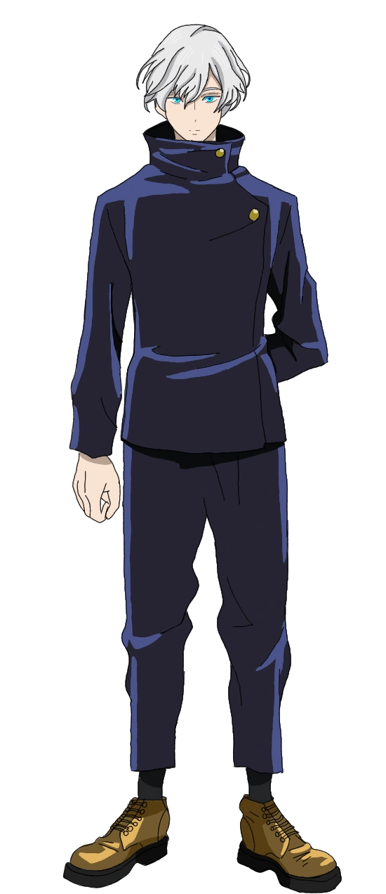
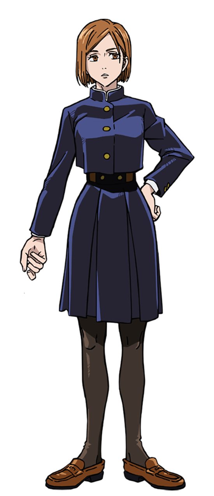

Strój codzienny
Codzienny mundurek męski składa się z 2 części. Granatowa marynarka zapinana na 2 guziki oraz granatowe gładkie spodnie. Obowiązują również czarne skarpetki. Kolor butów jest dowolny.
Strój galowy
Strój galowy męski składa się z 2 części. Biała koszula zapinana na 2 guziki oraz czarne gładkie spodnie. Obowiązują czarne skarpetki oraz czarne lub białe buty.
Strój do WF
Strój męski do wychowania fizycznego składa się z 2 części. Czarna dopasowana koszulka z krótkim rękawem oraz białe szerokie spodnie. Obowiązują czarne skarpetki stopki oraz czarne lub białe buty sportowe.
Strój męski
Strój żeński
Strój codzienny
Codzienny mundurek żeński składa się z 4 części i dodatków. Granatowa marynarka zapinana na 2 guziki. Biała koszula pod marynarką. Granatowa plisowana spódnica oraz czarne rajstopy. Kolor butów jest dowolny.
Strój galowy
Strój galowy żeńki składa się z 3 części. Białej koszuli zapinana przewiązana pod szyją chustą. Granatowej plisowanej spódnicy oraz czarnych rajstop. Kolor butów to czarny lub biały.
Strój do WF
Strój żeński do wychowania fizycznego składa się z 2 części. Czarny dopasowany top na ramiączkach oraz białe szerokie spodnie. Obowiązują czarne skarpetki stopki oraz czarne lub białe buty sportowe.